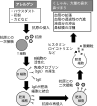

2021年
問題29 アレルギーに関する次の記述のうち，最も不適当なものはどれか．
（1）低湿度は，アトピー性皮膚炎の増悪因子である．
（2）アレルゲンの同定は予防，治療の上で重要である．
（3）ヒスタミンは，アレルゲンの一種である．
（4）アレルギー反応は，体に有害である免疫反応をいう．
（5）過敏性肺炎の一種である加湿器肺の予防には，加湿器の微生物汚染の防止が重要である．
2021年
問題29 正解（3） 頻出度AAA
ヒスタミンはアレルゲン(抗原)ではない．
特定の抗原（体内に侵入した異物）＝アレルゲンによって，その抗原に特異的に結合（攻撃）する抗体（免疫グロブリンと呼ばれる蛋白質）やリンパ球（白血球球の一種）が体内に生じる．これを抗原抗体反応，あるいは免疫反応という．そのうち人に有害な免疫反応をアレルギーと呼んでいる（2021-29-1図参照）．
2021-29-1図 アレルギー発症のメカニズム

二次接触でアレルゲンが肥満細胞に結合し，さらに抗体（IgE，免疫グロブリンE）が結令すると，肥満細胞からヒスタミン等の化学伝達物質が放出される．それらの化学伝達物質は，血管の透過性を増し，気管支壁にある平滑筋を収縮させ，気管支の内腔に分泌される粘液を増加させ，白血球を集める作用がある．アレルギー性鼻炎で鼻汁やくしゃみが出たり，気管支喘息で呼吸困難発作が起きるのは，この反応による．
アレルギーの発症，増悪（病態の急な悪化，発作）には患者の素因が関係している．アレルゲンの同定は，症状発生の防止，治療の上で重要である．アレルゲン同定の方法の1つに，皮内テストがある．
-(5) 過敏性肺炎は，有機粉じんの吸入により起こるアレルギー性の疾患である．
過敏性肺炎は，肺の間質（肺胞，気管支，毛細血管を取り囲んでつなぐ組織）に病変がおきる間質性疾患である．家庭やオフィスで加湿器や空気調和設備に増殖した好熱性放線菌や真菌その他の粒子が抗原となるので，換気装置性肺炎，加湿器肺とも呼ばれる．急性と慢性があり，特に夏に増殖する，高温高湿で日当たりが悪く，換気状態の悪い家屋で増殖する真菌（トリコスポロン）によって発症するものは夏型過敏性肺炎と呼ばれる．発生時の対策と予防上最も重要なことは，環境からの抗原の除去であり，そのために貯水槽やフィルタの清掃や消毒を頻回に行い，空気調和設備や加湿器が微生物で汚染されるのを防止する．
過敏性肺炎の原因として，アスベスト，窒素酸化物，たばこ煙，二酸化硫黄などが出題されたことがあるが，これらは過敏性肺炎とは関係がなく，誤りである．